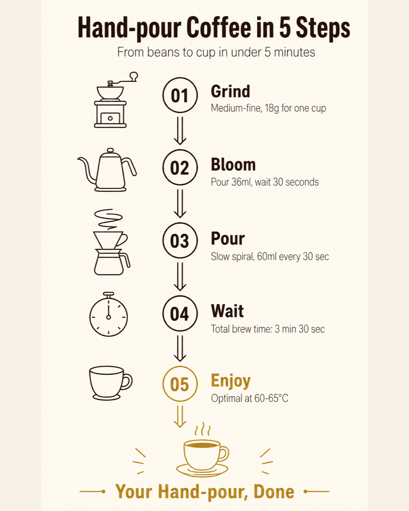

返回 CH6 模板速查站
(C3)
Step-by-Step Infographic 步驟教學圖
把一個流程拆成 3-7 個步驟、垂直或水平排列的教學圖。食譜、SOP、健身動作、保養品使用方法、操作教學最常用。重點是「視覺引導要清楚」、讀者跟著步驟做不會卡住。
這張卡片你會學到
能判斷何時用步驟圖（與 bento / 對比圖差異）
能拆解 6 段並安排步驟視覺節奏
能識別 4 種踩雷（步驟太多／視覺引導不清／每步動作模糊／結尾沒結論）
(01)
適用場景
這個模板用在哪
步驟教學圖。3-7 個步驟、每步驟一個重點、視覺引導（箭頭 / 數字 / 連線）讓讀者一眼看懂順序。料理 SOP、健身動作、保養流程、咖啡沖泡、課程招生 onboarding 最高頻。
典型客戶 / 交付物 SaaS / 線上課程 / 料理創作者、單次接案 NT$2,000-5,000、交付：教學步驟圖 1 張（含 3-7 步驟視覺引導）
四個典型用途：
- 食譜教學圖（餐廳、料理 KOL、自家品牌）
- 保養品 / 化妝品使用步驟（上架圖必備）
- 健身動作 / 瑜伽動作教學（個人教練 IG 內容）
- 課程 onboarding 流程（報名後 3-5 步上手）
| 對比項 | 本卡片 · C3 Step-by-Step Infographic 步驟教學圖 | 近似模板 |
|---|---|---|
| 結構 | 垂直 / 水平排列的 N 步驟 | C1：bento grid；C2：兩欄對比 |
| 順序性 | 必須順序讀（步驟 1→2→3） | C1：跳躍式；C2：左右 |
| 視覺引導 | 必有箭頭 / 數字 / 連線 | C1：通常無；C2：欄位區隔 |
| 步驟數量 | 3-7 個（最佳 5） | C1：4-9 格；C2：5-7 對比項 |
| 結尾 | 通常含「成果」或「驗收」 | C1：CTA banner；C2：結論句 |
| 適用內容 | 流程性 / 操作性 | C1：並列；C2：選擇 |
一句話判斷：客戶問「我要教用戶怎麼做 X」走 C3；問「並列重點」走 C1；問「A vs B」走 C2。C3 對 SaaS / 課程客戶最有用——onboarding 步驟圖能直接降低客服問題。
(02)
模板拆解｜6 段 prompt 結構
步驟教學圖 6 段。核心難度在「視覺引導」——AI 容易把每步驟做成獨立的小圖、忘了連線：
| 段 | 段落 | 必問還是可預設 | 填什麼 |
|---|---|---|---|
| 1 | topic 教學主題 | 必問 | 教什麼（≤ 8 字）+ 完成後得到什麼 |
| 2 | step count 步驟數 | 必問 | 3-7 個（最佳 5）；過多就拆兩張圖 |
| 3 | step contents | 必問 | 每步：數字 / 圖標 + 動作標題（≤ 6 字）+ 1 行說明 |
| 4 | visual flow 視覺引導 | 必問 | 箭頭 / 連線 / 編號圈、引導讀者順序 |
| 5 | outcome 成果 | 選用 | 底部 1 個「完成後」視覺（成品照 / 達成圖） |
| 6 | 限制 | 固定寫死 | 禁忌：步驟超過 7 個、視覺引導不清、每步字數失衡、無結尾 |
記憶口訣：主題 → 步驟數 → 內容 → 流向 → 成果 → 禁。新手最常忽略「視覺引導」——只放 5 個並排的小圖、沒有箭頭，讀者不知道哪個先看。明確寫「numbered circles 1-5 + arrows between steps」。
(03)
示範圖｜可複製、可重現
下面這張是「手沖咖啡 5 步驟」教學圖。垂直排列、編號圈 + 箭頭引導、每步驟 1 個 icon + 標題 + 說明、底部成品咖啡杯收尾。適合咖啡品牌 EDM 教學內容。

完整 prompt · 手沖咖啡 5 步驟教學圖
請生成一張步驟教學資訊圖（step-by-step infographic）： 【整體】4:5 直立比例、適合 IG / Threads 貼文。 【主題】「Hand-pour Coffee in 5 Steps」（畫面頂部標題、無襯線粗體、深棕、置中） 副標：「From beans to cup in under 5 minutes」（細體、淺棕、置中） 【5 步驟（垂直排列、編號圈 + 向下箭頭連線）】 1. **Grind**（編號圈 01、深棕填充）+ 磨豆機 icon + 「Medium-fine, 18g for one cup」 2. **Bloom**（編號圈 02）+ 注水壺 icon + 「Pour 36ml, wait 30 seconds」 3. **Pour**（編號圈 03）+ 慢注 icon + 「Slow spiral, 60ml every 30 sec」 4. **Wait**（編號圈 04）+ 計時器 icon + 「Total brew time: 3 min 30 sec」 5. **Enjoy**（編號圈 05、燙金強調）+ 杯子 icon + 「Optimal at 60-65°C」 【視覺引導】每步驟之間有向下箭頭（深棕、極簡 2 條線）、編號圈大小一致、icon 風格統一（極簡黑線 ≤ 3 線）。 【底部成果區】小張成品咖啡杯（手沖咖啡剛沖好）+ 標題「Your Hand-pour, Done」（燙金、置中） 【色板】嚴格 3 色：米白底 + 深棕字 + 燙金 accent（用於最後一步與成果區）。 【字體】2 種：標題與步驟名用無襯線粗體、說明用無襯線細體。全英文。 【限制】嚴禁人物或人體局部、嚴禁步驟超過 5 個、嚴禁箭頭斷掉（要明顯連續引導）、嚴禁字體超過 2 種、嚴禁中文字、嚴禁 icon 過於繁複。
讀圖時看這 4 個點：(1) 步驟編號是不是清楚（01-05 大圓圈）？(2) 箭頭引導有沒有斷掉？(3) 每步說明字數有沒有平衡？(4) 結尾成果有沒有讓人「啊我也想做」？
(04)
改成你的場景｜踩雷與失敗案例
把 prompt 拿來、改 3 個替換槽就變你的版本：
| 替換槽 | 你的版本 |
|---|---|
| ⓐ 教學主題 + 步驟數 = ? | 例：手沖咖啡 5 步 / 健身動作 4 步 / 保養 SOP 5 步 / 上線 onboarding 3 步 |
| ⓑ 每步動作 + 說明 = ? | 例：磨豆 / 注水 / 慢注 / 等待 / 享用 |
| ⓒ 結尾成果 = ? | 例：成品咖啡 / 訓練完成圖 / 訂單確認頁 / 第一個輸出 |
最常見的 4 種踩雷：
- 步驟超過 7 個 客戶想塞 10 步驟、結果讀者看 3 步就放棄。解法：明確寫「max 5 steps, ideally 3-5」、超過就拆兩張圖、後面標「Continued」。
- 視覺引導斷掉 5 個步驟並排、沒有箭頭——讀者不知道從哪看起。解法：明確寫「arrows between every consecutive step」「numbered circles must be sequential and visible」。
- 每步動作模糊 「準備一杯」這種動作太抽象、讀者沒法跟著做。解法：每步動作要有「動詞 + 數字」（「Grind 18g」而非「Grind some beans」）。
- 中文步驟名一律後製 AI 生圖工具的中文字體限制。C3 的最佳策略：英文版用 AI 直接生成（Grind / Bloom / Pour），中文版（「磨豆」「悶蒸」「慢注」）走 後製字體疊圖工作流附錄。
實戰提醒：C3 步驟圖客戶很多會做「系列教學」（5 個料理 SOP / 10 個健身動作）、用 Figma 建主元件、每張只換步驟內容、編號 + 箭頭 + icon 自動套用，效率最高。
交付提醒 本卡片的 AI 生成的示範圖不是可直接給客戶的最終交付品。中文商業案一律先用 AI 生出構圖（含英文佔位文字）、再走 後製字體疊圖工作流 在 Figma／Canva 疊上中文、最後校稿確認才交付給客戶。
本卡片改寫自 ConardLi／garden-skills 之
step-by-step-infographic.md 模板（MIT License、2026），已對中文進行台灣用語在地化、加入本地接案情境與失敗案例。